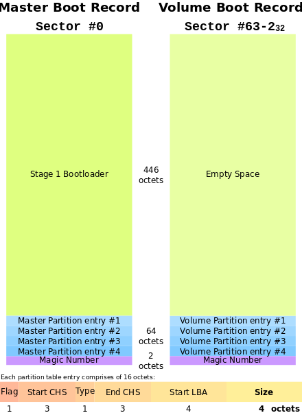
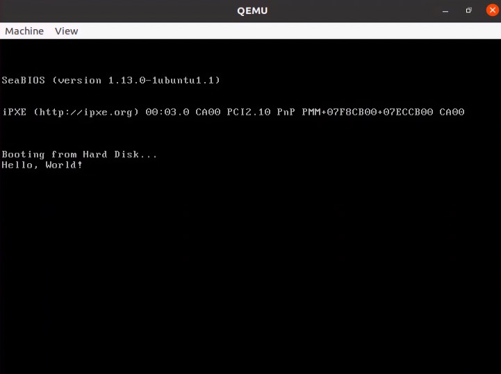

$ sudo dd if=/dev/nvme0n1 bs=512 count=1 skip=0 > lba.0
$ hexdump -C lba.0
00000000 eb 63 90 10 8e d0 bc 00 b0 b8 00 00 8e d8 8e c0 |.c..............|
00000010 fb be 00 7c bf 00 06 b9 00 02 f3 a4 ea 21 06 00 |...|.........!..|
00000020 00 be be 07 38 04 75 0b 83 c6 10 81 fe fe 07 75 |....8.u........u|
00000030 f3 eb 16 b4 02 b0 01 bb 00 7c b2 80 8a 74 01 8b |.........|...t..|
00000040 4c 02 cd 13 ea 00 7c 00 00 eb fe 00 00 00 00 00 |L.....|.........|
00000050 00 00 00 00 00 00 00 00 00 00 00 80 01 00 00 00 |................|
00000060 00 00 00 00 ff fa 90 90 f6 c2 80 74 05 f6 c2 70 |...........t...p|
00000070 74 02 b2 80 ea 79 7c 00 00 31 c0 8e d8 8e d0 bc |t....y|..1......|
00000080 00 20 fb a0 64 7c 3c ff 74 02 88 c2 52 bb 17 04 |. ..d|<.t...R...|
00000090 f6 07 03 74 06 be 88 7d e8 17 01 be 05 7c b4 41 |...t...}.....|.A|
000000a0 bb aa 55 cd 13 5a 52 72 3d 81 fb 55 aa 75 37 83 |..U..ZRr=..U.u7.|
000000b0 e1 01 74 32 31 c0 89 44 04 40 88 44 ff 89 44 02 |..t21..D.@.D..D.|
000000c0 c7 04 10 00 66 8b 1e 5c 7c 66 89 5c 08 66 8b 1e |....f..\|f.\.f..|
000000d0 60 7c 66 89 5c 0c c7 44 06 00 70 b4 42 cd 13 72 |`|f.\..D..p.B..r|
000000e0 05 bb 00 70 eb 76 b4 08 cd 13 73 0d 5a 84 d2 0f |...p.v....s.Z...|
000000f0 83 d0 00 be 93 7d e9 82 00 66 0f b6 c6 88 64 ff |.....}...f....d.|
00000100 40 66 89 44 04 0f b6 d1 c1 e2 02 88 e8 88 f4 40 |@f.D...........@|
00000110 89 44 08 0f b6 c2 c0 e8 02 66 89 04 66 a1 60 7c |.D.......f..f.`||
00000120 66 09 c0 75 4e 66 a1 5c 7c 66 31 d2 66 f7 34 88 |f..uNf.\|f1.f.4.|
00000130 d1 31 d2 66 f7 74 04 3b 44 08 7d 37 fe c1 88 c5 |.1.f.t.;D.}7....|
00000140 30 c0 c1 e8 02 08 c1 88 d0 5a 88 c6 bb 00 70 8e |0........Z....p.|
00000150 c3 31 db b8 01 02 cd 13 72 1e 8c c3 60 1e b9 00 |.1......r...`...|
00000160 01 8e db 31 f6 bf 00 80 8e c6 fc f3 a5 1f 61 ff |...1..........a.|
00000170 26 5a 7c be 8e 7d eb 03 be 9d 7d e8 34 00 be a2 |&Z|..}....}.4...|
00000180 7d e8 2e 00 cd 18 eb fe 47 52 55 42 20 00 47 65 |}.......GRUB .Ge|
00000190 6f 6d 00 48 61 72 64 20 44 69 73 6b 00 52 65 61 |om.Hard Disk.Rea|
000001a0 64 00 20 45 72 72 6f 72 0d 0a 00 bb 01 00 b4 0e |d. Error........|
000001b0 cd 10 ac 3c 00 75 f4 c3 fe 7e 7d 14 00 00 80 04 |...<.u...~}.....|
000001c0 01 04 0b fe c2 ff 00 08 00 00 00 00 10 00 00 fe |................|
000001d0 c2 ff 05 fe c2 ff fe 0f 10 00 02 e8 6f 25 00 00 |............o%..|
000001e0 00 00 00 00 00 00 00 00 00 00 00 00 00 00 00 00 |................|
000001f0 00 00 00 00 00 00 00 00 00 00 00 00 00 00 55 aa |..............U.|
00000200BIOS是Basic Input/Output System的简称，中文基本输入输出系统。它早期由厂商烧录在ROM（只读存储器，一般只能以只读方式读取，在计算机断电后也不会丢失数据。在计算机整机装入前写入。）存储芯片上的软件程序。随着技术的发展，现代的一般放在闪存中，允许BIOS的动态升级。
BIOS为操作系统提供了最基础的原始服务，操作系统来引导的时候基本会使用BIOS所提供的服务，在操作系统完全初始化后，操作系统一般就不再使用BIOS所提供的服务了。它的历史在网上很多，可以找一些资料看看。在这里我们主要介绍BIOS的软件功能。
在早期的计算机中，计算机加电后执行BIOS所提供的程序，BIOS一般主要分为三个部分：
-
加电自检：用于检测计算器是否存在错误
-
初始化：用于创建中断向量，设置寄存器，对一些外部设备进行初始化和检测等
-
引导操作系统：用于引导操作系统，在早期有些操作系统将引导程序内嵌到操作系统，BIOS负责将MBR加载到内存执行操作系统的引导，现代一般都有一个单独的引导程序用于引导操作系统，比如GRUB
BIOS提供了丰富的软件服务用于和硬件交互，比如打印数据，读取硬盘数据等等，它提供的这些服务主要为所操作系统服务，它位操作系统隔离硬件提供的一个统一的接口。具体的服务可以参考维基百科（en.wikipedia.org/wiki/BIOS_interrupt_call）
BIOS早期通过CHS进行加载数据到内存，到现在通常都是通过LBA进行硬盘寻址。BIOS通过加载第一个扇区叫做MBR的分区表加载到内存中用于接下来的引导工作。在Linux中这个工作就交给了GRUB等引导程序。
BIOS和MBR
BIOS引导操作系统时，BIOS会将磁盘中的数据加载到内存中，那么它如何知道要加载什么数据呢？答案是在BIOS中加载启动设备的第一个扇区。
通常一个磁盘通常会将其分成几个部分，在计算机中这个过程叫做分区，有很多分区的规范，而BIOS使用了一个叫做 MBR分区表 的格式。MRB分区表存放在磁盘的第一个扇区，这个扇区一般的大小为512字节。在BIOS的系统中，这512字节非常重要，它决定我们的系统能否启动成功。
MBR
MBR全称Master boot record，是BIOS中引入的概念，它是磁盘的第一个扇区，这个扇区大小为512字节。这个扇区是承接操作系统和BIOS的关键桥梁。BIOS完成所有的初始工作后，将加载磁盘的第一个分区到 0x7c00 的内存位置后，就将CPU的控制交给了 0x7c00 位置的代码了。
MBR中保存了重要的信息，它主要包含了用于引导操作系统的引导代码和分区信息。我们首先来看看MBR的结构

这个图来自维基百科，我们重点关注第一张图，因为第二张图通常用于GPT。在第一张图中我们知道开始的446个字节通过为引导程序所使用的，在Linux中，就是GRUB引导程序使用。紧接着的64个字节表示分区信息，每个分区信息占16个字节，最后的两个字节是 0xAA55 结尾。 0xAA55 作为签名作为这个值结束的第一个扇区表示这是一个MBR分区表。MBR分区表有很多变种，可以参考维基百科的介绍。
每个分区有16个字节，这个4个分区是主分区，这也为为什么一个硬盘最多为什么能够分为4个主分区的原因，为了能够突破最多使用4个分区的限制，可以将主分区设置为扩展分区，在扩展分区进行分区划分为多个逻辑分区，需要注意的扩展分区无法直接使用，只能够将逻辑分区作为最终数据访问的分区使用。我们可以将扩展分区看做一个独立的硬盘，可以将这个扩展分区继续进行分区，分成多个逻辑分区。逻辑分区的分区表则在每一个扩展分区的第一个扇区中。分区项极其复杂，下面我们将根据一个例子来分析MBR分区。
首先我们需要获取硬盘的第一个扇区的数据
这里我们使用gpt工具解析MBR
$ pip install gpt安装好后，可以通过这个命令查看MBR详细的信息
$ cat lba.0 | print_mbr
<<< MBR >>>
BootCode: 0xeb6390108ed0bc00b0b800008ed88ec0fbbe007cbf0006b90002f3a4ea21060000bebe073804750b83c61081fefe0775f3eb16b402b001bb007cb2808a74018b4c02cd13ea007c0000ebfe00000000000000000000000000000000800100000000000000fffa9090f6c2807405f6c2707402b280ea797c000031c08ed88ed0bc0020fba0647c3cff740288c252bb1704f607037406be887de81701be057cb441bbaa55cd135a52723d81fb55aa753783e101743231c0894404408844ff894402c7041000668b1e5c7c66895c08668b1e607c66895c0cc744060070b442cd137205bb0070eb76b408cd13730d5a84d20f83d000be937de98200660fb6c68864ff40668944040fb6d1c1e20288e888f4408944080fb6c2c0e80266890466a1607c6609c0754e66a15c7c6631d266f73488d131d266f774043b44087d37fec188c530c0c1e80208c188d05a88c6bb00708ec331dbb80102cd13721e8cc3601eb900018edb31f6bf00808ec6fcf3a51f61ff265a7cbe8e7deb03be9d7de83400bea27de82e00cd18ebfe47525542200047656f6d0048617264204469736b005265616400204572726f720d0a00bb0100b40ecd10ac3c0075f4c3
UniqueMBRDiskSignature: 0xfe7e7d14
Unknown: 0x0000
PartitionRecord: 0x800401040bfec2ff000800000000100000fec2ff05fec2fffe0f100002e86f250000000000000000000000000000000000000000000000000000000000000000
Signature: 0xAA55
<<< MBR Partition #0 >>>
#0.BootIndicator: 0x80
#0.Is Bootable? (syn): Yes
#0.StartingCHS: 4, 4, 1
#0.OSType: 0xB
#0.OSType (syn): ?
#0.EndingCHS: 255, 254, 194
#0.StartingLBA: 2048
#0.SizeInLBA: 1048576
<<< MBR Partition #1 >>>
#1.BootIndicator: 0x0
#1.Is Bootable? (syn): No
#1.StartingCHS: 255, 254, 194
#1.OSType: 0x5
#1.OSType (syn): ?
#1.EndingCHS: 255, 254, 194
#1.StartingLBA: 1052670
#1.SizeInLBA: 628090882
<<< MBR Partition #2 >>>
#2.BootIndicator: 0x0
#2.Is Bootable? (syn): No
#2.StartingCHS: 0, 0, 0
#2.OSType: 0x0
#2.OSType (syn): Empty
#2.EndingCHS: 0, 0, 0
#2.StartingLBA: 0
#2.SizeInLBA: 0
<<< MBR Partition #3 >>>
#3.BootIndicator: 0x0
#3.Is Bootable? (syn): No
#3.StartingCHS: 0, 0, 0
#3.OSType: 0x0
#3.OSType (syn): Empty
#3.EndingCHS: 0, 0, 0
#3.StartingLBA: 0
#3.SizeInLBA: 0这里重点关注分区表的信息，从分区表中我们知道使用了两个主分区信息。由于第一个分区设置了引导标志说明其是引导分区。同时我们使用fdisk查看一下分区信息
$ sudo fdisk -l /dev/sda
Disk /dev/sda: 300 GiB, 322122547200 bytes, 629145600 sectors
Disk model: VBOX HARDDISK
Units: sectors of 1 * 512 = 512 bytes
Sector size (logical/physical): 512 bytes / 512 bytes
I/O size (minimum/optimal): 512 bytes / 512 bytes
Disklabel type: dos
Disk identifier: 0x147d7efe
Device Boot Start End Sectors Size Id Type
/dev/sda1 * 2048 1050623 1048576 512M b W95 FAT32
/dev/sda2 1052670 629143551 628090882 299.5G 5 Extended
/dev/sda5 1052672 629143551 628090880 299.5G 83 Linux但在这里却看到3个分区信息，这是为什么？之前我们也说过，磁盘一般分区分为主分区，扩展分区和逻辑分区。所以在这里我们重点看第二个主分区信息
<<< MBR Partition #1 >>>
#1.BootIndicator: 0x0
#1.Is Bootable? (syn): No
#1.StartingCHS: 255, 254, 194
#1.OSType: 0x5
#1.OSType (syn): ?
#1.EndingCHS: 255, 254, 194
#1.StartingLBA: 1052670
#1.SizeInLBA: 628090882在这里我们看到OSType的值位5，通过查询维基百科关于分区类型的信息（en.wikipedia.org/wiki/Partition_type），知道值为5说明这个分区为扩展分区。通过这个信息，可以知道这个扩展分区从 1052670 开始，那么将这个扇区的数据截取出来
$ sudo dd if=/dev/sda bs=512 count=1 skip=1052670 > lba.1052670按照相同的方式将其显示为二进制数据
00000000 00 00 00 00 00 00 00 00 00 00 00 00 00 00 00 00 |................|
*
000001b0 00 00 00 00 00 00 00 00 00 00 00 00 00 00 00 fe |................|
000001c0 c2 ff 83 fe c2 ff 02 00 00 00 00 e8 6f 25 00 00 |............o%..|
000001d0 00 00 00 00 00 00 00 00 00 00 00 00 00 00 00 00 |................|
*
000001f0 00 00 00 00 00 00 00 00 00 00 00 00 00 00 55 aa |..............U.|
00000200这个数据布置让我们知道这个扇区也是一个MBR分区的信息，前446个字节为空，后面跟着的是分区信息，这个分区表示逻辑分区。然后我们使用gpt工具查看一下详细信息。
$ cat lba.1052670| print_mbr
<<< MBR >>>
BootCode: 0x0000000000000000000000000000000000000000000000000000000000000000000000000000000000000000000000000000000000000000000000000000000000000000000000000000000000000000000000000000000000000000000000000000000000000000000000000000000000000000000000000000000000000000000000000000000000000000000000000000000000000000000000000000000000000000000000000000000000000000000000000000000000000000000000000000000000000000000000000000000000000000000000000000000000000000000000000000000000000000000000000000000000000000000000000000000000000000000000000000000000000000000000000000000000000000000000000000000000000000000000000000000000000000000000000000000000000000000000000000000000000000000000000000000000000000000000000000000000000000000000000000000000000000000000000000000000000000000000000000000000000000000000000000000000000000000000000000000000000000000000000000000000000000000000000000000000000000
UniqueMBRDiskSignature: 0x00000000
Unknown: 0x0000
PartitionRecord: 0x00fec2ff83fec2ff0200000000e86f25000000000000000000000000000000000000000000000000000000000000000000000000000000000000000000000000
Signature: 0xAA55
<<< MBR Partition #0 >>>
#0.BootIndicator: 0x0
#0.Is Bootable? (syn): No
#0.StartingCHS: 255, 254, 194
#0.OSType: 0x83
#0.OSType (syn): ?
#0.EndingCHS: 255, 254, 194
#0.StartingLBA: 2
#0.SizeInLBA: 628090880
<<< MBR Partition #1 >>>
#1.BootIndicator: 0x0
#1.Is Bootable? (syn): No
#1.StartingCHS: 0, 0, 0
#1.OSType: 0x0
#1.OSType (syn): Empty
#1.EndingCHS: 0, 0, 0
#1.StartingLBA: 0
#1.SizeInLBA: 0
<<< MBR Partition #2 >>>
#2.BootIndicator: 0x0
#2.Is Bootable? (syn): No
#2.StartingCHS: 0, 0, 0
#2.OSType: 0x0
#2.OSType (syn): Empty
#2.EndingCHS: 0, 0, 0
#2.StartingLBA: 0
#2.SizeInLBA: 0
<<< MBR Partition #3 >>>
#3.BootIndicator: 0x0
#3.Is Bootable? (syn): No
#3.StartingCHS: 0, 0, 0
#3.OSType: 0x0
#3.OSType (syn): Empty
#3.EndingCHS: 0, 0, 0
#3.StartingLBA: 0
#3.SizeInLBA: 0从信息中我们知道这个扩展分区只有一个逻辑分区，从扇区2开始，但需要注意的这个2有一个偏移量，也就是扩展分区的起始地址，也就是1052670，所以这个逻辑分区真正的扇区从1052670 + 2开始。和fdisk显示的是一致的。而且类型为0x83，说明他是一个Linux分区类型。
至此，我们学习了MBR分区格式，并且举一个例子来分析MBR分区格式。那么前446个字节是什么，MBR分区的446个字节是GRUB的引导代码，用于承接后续的GRUB的流程。这段代码我们会在后续GRUB的分析中慢慢展开，在这里我们只要知道MBR分区的构造即可，MBR由446个字节的引导代码和64字节的分区表，以及2个字节的0xAA55标志组成，总共512字节。
接着，BIOS所提供的服务一般都是通过调用中断服务程序来实现，它提供了极其丰富的功能，我们下面将使用一个简单的例子来说明如何调用BIOS所提供的服务。
一个BIOS例子
这个例子展现了如何在 Qemu 模拟器上打印出一个 Hello World。我们使用了BIOS所提供的打印功能 **
.code16
start:
mov $msg, %si /*将si寄存器指向打印的数据*/
mov $0x0e, %ah /*将ah寄存器设置为0x0e*/
loop:
lodsb /*将si的数据赋值给al，并且将si指向下一个字符*/
or %al, %al /*判断字符串是否结束，这里以空作为字符串的结束字符*/
jz halt /*如果字符串结束，那么跳转到halt*/
int $0x10 /*调用bios 0x10功能*/
jmp loop /*跳转到loop，继续执行*/
halt:
hlt /*挂起处理器*/
msg:
.asciz "hello world" /*将要被打印的数据*/
.org 510
.word 0xaa55在没有开始编译前，看看这段代码，注释中详细的说明了这段代码调用了BIOS的0x10功能，通过维基百科BIOS中断调用(en.wikipedia.org/wiki/BIOS_interrupt_call)，可以知道0x0Eh功能用于向显示器打印字符。通过将0x0Eh赋值给ah寄存器，al寄存器中负责真正显示的字符。
同时，这里还提供了一个Makefile，用于生成MBR格式的文件镜像
.POSIX:
MAIN := main.img
.PHONY: clean run
$(MAIN): main.S
as -o main.o '$<'
ld --oformat binary -o '$@' -Ttext 0x7C00 main.o
clean:
rm -f '$(MAIN)'使用as将源文件编译为二进制文件，然后使用ld进行链接，并将代码的地址以0x7C00编译，
$ make运行
$ qemu-system-x86_64 main.img运行的结果如下

BIOS的缺点
但由于BIOS是几十年前的产物，有一些无法满足现代操作系统的需求。
-
BIOS运行在16位的实模式下，最大寻址空间为1M
-
BIOS无法使用更加先进的处理器技术
-
BIOS使用的MBR分区无法支持更大的磁盘空间，MBR分区支持最大的磁盘空间为2T
-
BIOS的代码由汇编编写，降低了工作效率
-
由于MBR是第一个扇区，所以BIOS无法智能的选择操作系统，这样就无法安装双系统，比如同时安装windows和linux，但在linux中有一个方案就是linux安装的时候会使用grub引导，使用grub来引导windows和linux，让这两个系统共存。所以我们可以安装好后windows，后安装linux，linux会自动监测到windows，从而将其加到grub的启动菜单中。这里涉及到grub的内容，后边会有介绍关于grub的。
为了解决这些问题，从而引入了更加先进的UEFI固件，UEFI固件规范中也规定了新的分区格式即GPT分区格式。